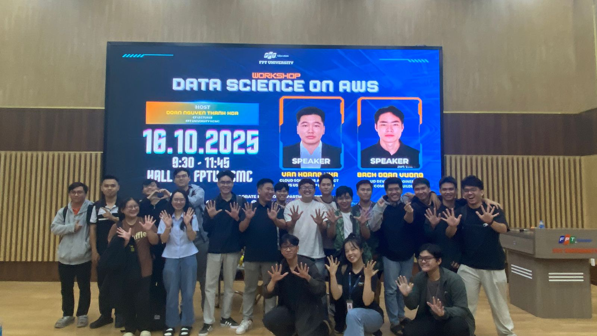

Event 3
Workshop “Data science on AWS” – Mở khoá sức mạnh dữ liệu cùng điện toán đám mây
Mục Đích Của Sự Kiện
Khám phá hành trình xây dựng hệ thống Data Science hiện đại
Danh Sách Diễn Giả
- Văn Hoàng Kha – Cloud Solutions Architect, AWS Community Builder
- Bạch Doãn Vương – Cloud DevOps Engineer, AWS Community Builder
Nội Dung Nổi Bật
Tổng quan về AI và các khái niệm nền tảng (Anh Kha)
Anh Kha mở đầu bằng việc hệ thống hóa các khái niệm quan trọng trong lĩnh vực trí tuệ nhân tạo:
- Trí tuệ nhân tạo (AI): Được ví như một “trợ lý ảo”, AI là công nghệ cho phép máy móc mô phỏng khả năng học hỏi và phân tích tương tự con người. AI có thể xử lý khối lượng dữ liệu lớn với tốc độ cao, liên tục cải thiện thông qua quá trình học từ dữ liệu mới.
- Machine Learning (ML): Là nhánh của AI, nơi hệ thống học quy luật từ dữ liệu dạng văn bản hoặc số để tạo ra dự đoán hoặc phân loại.
- Deep Learning (DL): Phương pháp học sâu dựa trên mạng nơ-ron nhiều tầng, giúp máy học được các dạng dữ liệu phức tạp như hình ảnh, âm thanh hay dữ liệu phi cấu trúc.
- Generative AI: Loại mô hình AI được huấn luyện từ kho dữ liệu khổng lồ để tạo ra nội dung mới như văn bản, hình ảnh, video. Ví dụ: Gemini của Google, Amazon Bedrock của AWS. Đây là bước tiến vượt trội so với ML và DL vì mô hình có thể “sáng tạo”, thay vì chỉ dự đoán.
Nhóm dịch vụ AI/ML trên AWS (Anh Kha)
Anh Kha giải thích cách AWS xây dựng hệ sinh thái dịch vụ theo 3 lớp:
Tầng 1 – AI Services (Dịch vụ AI)
Các dịch vụ dạng “dùng ngay”, người dùng gọi API để giải quyết các bài toán cụ thể như thị giác máy tính, xử lý ngôn ngữ tự nhiên hoặc tạo giọng nói.
Tầng 2 – ML Services
Dành cho người cần toàn quyền trong việc xử lý dữ liệu, xây dựng, huấn luyện và tinh chỉnh mô hình.
Amazon SageMaker là dịch vụ trung tâm, tương tự như Google Colab nhưng mạnh mẽ và chuyên nghiệp hơn.
Tầng 3 – ML Frameworks & Infrastructure
AWS cung cấp hạ tầng và phần cứng GPU/CPU chuyên dụng, hợp tác với các hãng như NVIDIA để hỗ trợ việc training mô hình lớn.
Các dịch vụ AI tiêu biểu của AWS
Một loạt dịch vụ AI được giới thiệu:
- Amazon Comprehend: Phân tích ngôn ngữ tự nhiên, trích xuất thông tin từ văn bản.
- Amazon Translate: Dịch thuật đa ngôn ngữ dựa trên Deep Learning.
- Amazon Transcribe: Chuyển giọng nói thành văn bản.
- Amazon Polly: Chuyển văn bản thành giọng nói tự nhiên.
- Amazon Textract: Tự động đọc và trích xuất dữ liệu từ tài liệu scan và chữ viết tay.
- Amazon Rekognition: Nhận diện khuôn mặt, vật thể, phân tích video.
- Amazon Personalize: Xây dựng hệ thống gợi ý giống Netflix, YouTube dựa trên hành vi người dùng.
Quy trình xây dựng mô hình Machine Learning
Anh Kha chia sẻ chu trình chuẩn khi phát triển một mô hình ML:
- Xử lý và chuẩn bị dữ liệu (Feature Engineering): Làm sạch dữ liệu, chuyển đổi sang dạng máy hiểu được.
- Huấn luyện mô hình: Dùng dữ liệu đã xử lý để dạy máy học quy luật.
- Đánh giá & tinh chỉnh: Kiểm tra độ chính xác; nếu chưa đạt yêu cầu thì quay lại bước xử lý dữ liệu.
- Triển khai: Đưa mô hình vào sử dụng thực tế cho người dùng.
- Giám sát và cải thiện: Thu thập phản hồi, cập nhật dữ liệu để nâng chất lượng mô hình.
AWS cũng cung cấp SageMaker Canvas, cho phép người dùng xây dựng và triển khai mô hình ML bằng giao diện kéo thả, không cần viết code.
Phần demo thực hành (Anh Vương)
Xử lý và làm sạch dữ liệu IMDb với AWS Glue
- Dữ liệu thô được lưu vào S3.
- AWS Glue được sử dụng để tự động xử lý, làm sạch và chuẩn hóa dữ liệu.
- Dữ liệu sau xử lý tiếp tục được đưa vào S3 để sẵn sàng cho SageMaker training.
So sánh chi phí: Cloud vs On-Premise
- Cloud giúp giảm chi phí hạ tầng ban đầu và chi phí bảo trì.
- AWS cho phép mở rộng (scale) tài nguyên theo nhu cầu, không bị giới hạn phần cứng.
- Việc thử nghiệm nhiều mô hình trở nên dễ dàng, linh hoạt và nhanh chóng hơn so với môi trường tự vận hành.
Bài học rút ra
- Chiến lược luôn đi trước công nghệ: Mình nhận ra rằng chuyển đổi số hay áp dụng GenAI chỉ hiệu quả khi xuất phát từ nhu cầu kinh doanh cụ thể, không phải vì chạy theo xu hướng.
- Migration phải có lộ trình rõ ràng: Việc dịch chuyển hệ thống lên cloud nên theo từng giai đoạn nhỏ, kiểm soát rủi ro và đo lường kết quả, thay vì làm đồng loạt.
- GenAI có thể tăng tốc phát triển phần mềm: Qua demo Amazon Q Developer, mình hiểu rõ hơn về cách AI có thể tự động hóa rất nhiều khâu trong SDLC.
- Bảo mật phải thiết kế ngay từ đầu: Security không phải bước “vá lỗi”, mà phải được đặt nền móng trong toàn bộ quy trình xây dựng hệ thống.
- Con người vẫn là yếu tố quyết định: Công nghệ mạnh đến mấy cũng chỉ là công cụ. Tư duy, khả năng học hỏi và cách tổ chức thực thi mới quyết định thành công.
Ứng Dụng Thực Tế
- Thực hiện event storming với đội ngũ để tìm ra các use case AI phù hợp với nhu cầu thực tế thay vì làm theo cảm tính.
- Thử tích hợp Amazon Q Developer vào quy trình phát triển hiện tại để xem mức độ rút ngắn thời gian coding, testing, review.
- Lên kế hoạch migration theo từng phase, bắt đầu từ những workload ưu tiên, giúp giảm rủi ro và dễ tối ưu sau mỗi giai đoạn.
- Áp dụng DevSecOps, đảm bảo bảo mật xuyên suốt từ development đến deployment.
- Tăng cường trao đổi nội bộ về chiến lược AI/Cloud để toàn team cùng nhìn chung một hướng.
Cảm Nhận Cá Nhân
Đây là một sự kiện để lại cho mình nhiều ấn tượng:
- Phiên thảo luận về GenAI rất thực tế, mỗi diễn giả có quan điểm khác nhau nhưng đều thống nhất rằng AI phải gắn liền với mục tiêu kinh doanh.
- Xem demo Amazon Q Developer trực tiếp giúp mình hình dung rõ ràng hơn về tương lai phát triển phần mềm với sự hỗ trợ của AI.
- Networking với nhiều chuyên gia và builder giúp mình mở rộng góc nhìn, học thêm được nhiều insight thú vị.
Nhìn chung, sự kiện vừa mang tính truyền cảm hứng, vừa đem lại kiến thức rất thực tiễn cho hành trình làm việc với Cloud và GenAI.
Một số hình ảnh khi tham gia sự kiện
